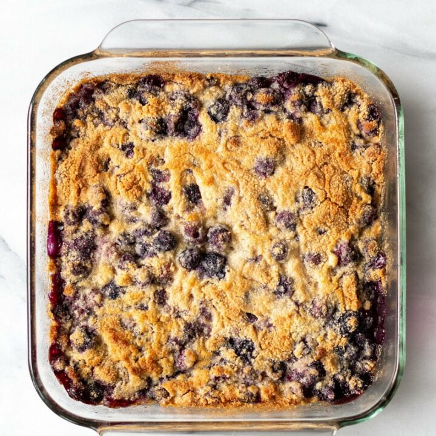

Blackberry Dump Cake

This blackberry dump cake is a crowd pleaser. Serve with ice cream or whipped topping.
Ingridients
- 4.5 cups fresh blackberries
- 1.5 cups white sugar
- 1 cup unsalted butter, thinly sliced
- 1 package French vanilla cake mix
Steps
- Preheat the oven to 350 degrees F (175 degrees C).
- Mix blackberries and sugar together in a bowl. Transfer to a 9x13-inch glass baking pan and spread evenly over the bottom.
- Sprinkle cake mix evenly over the berries. Place butter slices evenly over the cake mix; most of the cake mix should be covered with butter slices. Do not mix or stir.
- Bake in the preheated oven until topping is golden brown, about 45 minutes. Serve warm.